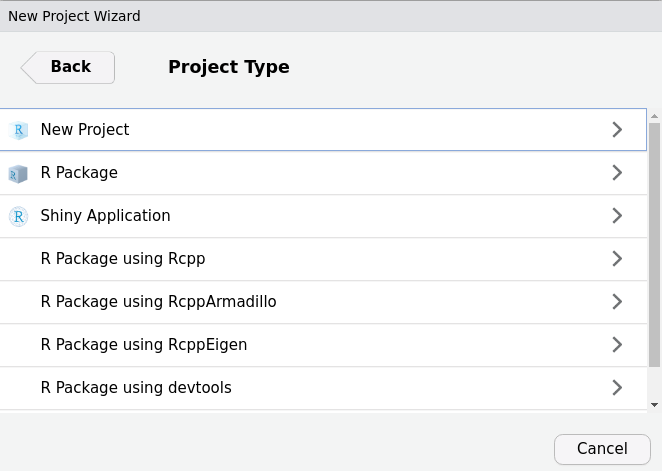
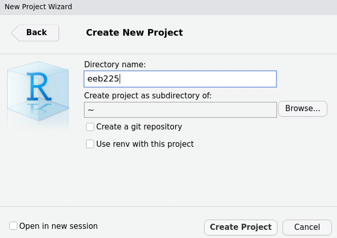
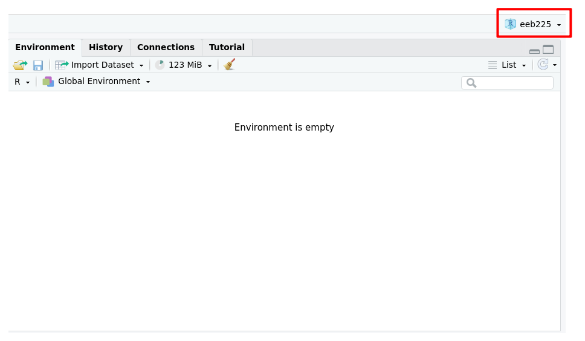
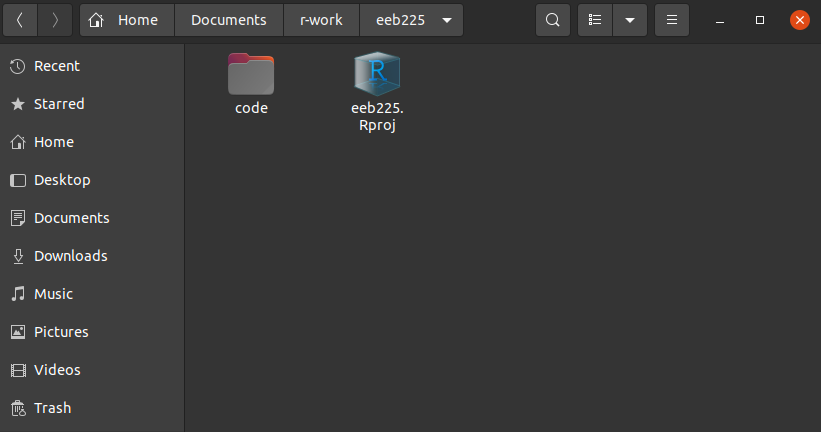
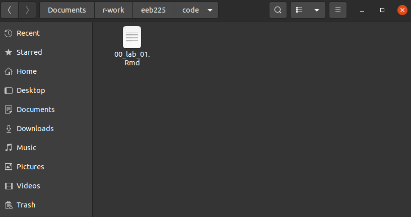
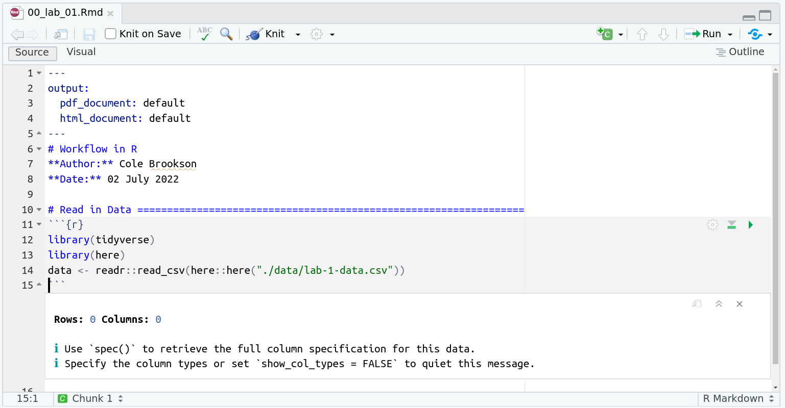

Workflow
This section will take you through a set of best practices for optimizing your daily workflow in R. NOTE: This will progress from beginner topics to more advanced usage, so please only operationalize from this section what is relevant to you.
Workflow for All Users
In this section we assume that you have R and RStudio downloaded, understand what objects are in R, and have been able to open a .R file that you would write code in.
Even if you are a beginner, there are some basics to keep in mind that will make your life SO much easier down the road.
Script Files
When we first start using R, the first thing we want to do is make use of the two files most appropriate for writing R code that we can reuse - R scripts and RMarkdown files. When we start a project, we'll open a new script/Rmd file, and begin writing our code. What we actually write in those files is the topic of the rest of this website. But while we're writing that code, in our workflow there's a few things we need to do:
1. Write our code in order
2. Document your work
To write our code in order means that we follow a predictable series of steps that mean the objects we create in our script never depend on something that doesn't happen until later in the file. The typical set up of your script, whether in RMarkdown or in an R script follows the general pattern of: Set Up, Data Cleaning/Prep, Analysis, Plots, Saving Results. That might look something like this:

We'll now talk about where this file will go and how it'll talk to our computer appropriately.
Working Directories
You will likely have multiple files for the same project, whether lab report or publication. All scripts, data files, figures, and outputs, should be contained in the same place on your computer. We will call this a Working Directory and it's a fundamental concept in using R. Think of it as just a place on your computer that all the files that go along with a particular project are stored, and that you can tell R to look to for a particular file for when you need it.
Imagine you work on an analysis on Tuesday, close R, shut down your computer, and want to begin working on it again on Wednesday. On Tuesday you might have created a bunch of objects in your script, that were saved in your environment, that you still want access to on Wednesday. However, it is best practice to NOT save those objects in your environment until Wednesday. By structuring your R scripts and data files properly, you can recreate your environment safely each time, without having to worry about whether or not you are keeping any intermediate objects or things by accident. To make sure you do this, change your RStudio settings to not preserve your workspace (environment) in between sessions.
This will be annoying at first, but it will encourage better habits in the long run.
What you will want to do instead, is make use of your working directory to save the scripts and files you need to reproduce the parts of an anlysis that you've already done, so that you can just close R and you don't have to worry about saving those objects in your directory.
Think about the "Downloads" folder on your computer. Everytime you download something from the internet, your computer automatically puts it in that file on you computer. Then you can go and find it if you want it and move it. Similarly, you can tell R to look for files in a specific place on your computer, so it can read them all in.
If you're working in R right now, you can see your current directory with:
getwd()
When you are beginning, I recommend you make a folder in your Documents folder or some such place named something easily memorable such as r-work. Then, within that location, make sub-folders for each project you may work on. For example, within your r-work folder, you may have a subfolder for each class you're taking that requires R (i.e. a path like: /Documents/r-work/eeb225/), within which you should have additional folders such as data, and code.
This way when you open up a new RStudio session, you can set your working directory using:
setwd("...../Documents/r-work/eeb225/")
Note here that the "....." in that path is going to be specific to your computer's operating system. For example, in a Windows computer, it will likely be "C:\Users\YOURNAME\Documnents"
Paths in Computers
Above, we talked about the "path" to a particular file or folder on our computer. But what is a "path" anyways? In computers, there's something called a file system that manages files and directories. It organizes data into files, which are organized in directories (aka "folders"), which hold files or other directories.
Each operating system (OS) (i.e. MacOSX, Windows, and Linux) work slightly differently in their methods of file organization, but all the concepts are the same. Perhaps most notably, to separate directories or files, Windows will use a backslash \ but all other operating systems use a forward slash /.
The "path", is a speciic set of directories which point to a place in a computer. That is, we would say with respect to a particular file that it has a "path" that points to it in the computer. R will use this path if we ask it to read in that file.
So getting back to R and our workflow, once I have a working directory set, I can load in some data using something like this:
read.csv("./data/lab-1-data.csv")
and R would know that it should look for the relevant file in the data directory of /eeb225.
So how do I make sure I don't loose my work when I'm working on a project that might not be finished if I am not using my environment?? There's a relatively easy set of things you might want to do:
1. Organize your script so that you can run it all from the beginning and re-create the objects you were working with
2. Save any objects you can't afford to loose (i.e. model objects that take a long time to compute, things like that) as .rds objects. you can do that simply with saveRDS(object, path) where the object is the name of the object you're working with (e.g. "dataframe1"), and the path is the path to the location on your computer you want to save it to.
The workflow processes we've described above make up a good start for managing your workflow in R. Things like how specifically to read data into R, or where to look for how to save objects can be found elsewhere on this site.
Workflow for Intermediate Users
Once you're a bit more comfortable with writing a script and navigating directories, its time to up your skills. It's good to remember that we only add skills or complexity when it's beneficial to us. The things you learn here, while they feel like a big lift initially, will genuinely make your life easier, and will not only save you time, but make your research or coursework reproducible - important since it's almost always the case we go back to code later to either see how we did something, make changes to it, or steal some of it for a current project.
For this section, we assume you're familiar with R scripts and .Rmd files, packages, and some basic programming, including reading in data to R.
RProjects and the here Package
In the last section we talked about working directories and how we can use setwd() to tell R where to look in our computer for where all our files are for a given project. However, as soon as you are more comfortable in R, you should not use the setwd() function, and should instead use RProjects as described below. While this approach of setwd() may seem simple and foolproof, it is actually very easy to get confused, and is not recommended past the first few usages of R.
Instead of using setwd(), there is a simple and even more foolproof solution to linking all your related files together. One can very simply make a new project. In RStudio, click File > New Project then select New Directory if you do not have a directory for this set of files yet. If you DO, you can select existing directory.
Now, select "New Project"
And then name the project.

Use a simple and reasonable name. If I want to make a project for a class, it might be easiest to name it after the course code. Then, to select your subdirectory, select "Browse..." and click through to the location you want (we recommend putting a folder called r-work or something similar inside your Documents folder), like this:
And select the r-work folder (for this example). Now we can see the project is ready to create!
Now simply select "Create Project" to complete the process. Once you do this, RStudio will re-open a new session with that project opened. We can see this in the top right hand corner by the environment:

And now our project is all set up and ready to go! If we want to check that it has worked, we can ask R to getwd(), and we see the output is exactly what we expected:
Once you have your RProject set up, it'
- Working Directories
- s time to write some code. So within your (for example)
/r-work/eeb225, make a new folder called, say,code, and save a new RMarkdown file there that might be for your first lab. That might look like this: And here we see we now have our RProject (
.Rprojfile) and our folder for code, inside which isWhere we see our file. Note how it is named with numbers at the beginning. See below in the Style Guide for why this is.
here Package
Now let's assume you might get some data for this lab from your TA (i.e. a file called lab-1-data.csv) that you'll need to work on the assignment(s). This is where the here package comes in. If we have a second subfolder in our directory called data and within that is our file like this:
We will want to be able to access that file reliably. In fact, at some point we might even want to send the whole directory (i.e. the whole eeb225 folder) to someone else, maybe the TA or in the future a collaborator, so they can run it all themselves.
This presents a challenge
Whoever you may want to send your project to may not use the same operating system as you (i.e. Mac OS vs. Windows vs. Linux), and they may keep their files in a different place than you. If we used an absolute path in our code to read in this data file (something like, "C:/Users/Student1/Documents/r-work/eeb225"), then no one else would be able to use this code, since no one else will have the same absolute path as we do.
A good solution to this is the here package. This package helps us ignore absolute paths, in that the package itself will identify the relevant absolute path for your individual machine, so you only have to specify the relative path, that is, the path from the directory to whatever file you refer to.
If we used an absolute path to read in this file, using the tidyverse, our 00-lab-01.Rmd file may look like this:
But this wouldn't work for another user! So, we use the here package.
First we need to install the package:
install.packages("here")
Now we can edit our file to read in the data using the here() function. This is the magic of this package! When used along with an RProject, it provides a near-perfect reproducibility across computers and operating systems!
So our edited file would look something like this:

And this works perfectly! Notice what happens if we run just the here::here() function:
And we see it prints out the absolute path pointing to our current working directory! So when we use the here() function, we put in quotation marks, first ./ which signifies everything printed above that the package is taking care of for us, and then the relative path to the file we want, so in our case, data/lab-1-data.csv
Workflow for Advanced Uers
Once you are comfortable working in R, you will be served well by continuing to develop strong workflow practices that will make your work more reproducible, and closer to professional-quality code. One thing to consider is beginning to regularly use style guide components.
Style Guide
When writing code and managing files, it's always best to use consistent style. The best way to do so is to follow a style guide as closely as possible.
The go-to style guide in R is the Tidyverse Style Guide and much of the style guidelines here are copied and pasted directly. There are five key components of the style guide, *Files, Syntax, Functions, Pipes, `ggplot2`, and most of them follow relatively common sense suggestions. However, in order to make your code maximally functional to future you as well as to other readers, you're encouraged to read through the style guide and implement as much of it as makes sense.
Efficient Workflow
Another thing to begin doing when you're more comfortable in R is to begin to think more critically about a project *before* you just start writing code. There are many excellent books on writing good code more generally, but Efficient R Programming by Gillespie & Lovelace may be a good starting point. To summarize a few short important points from their work, Gillespie & Lovelace list some useful things that are worth considering:
1. Start without writing code but with a clear mind and perhaps a pen and paper. This will ensure that you keep your objectives at the forefront of your mind without getting lost in the technology.
2. Make a plan. The size and nature will depend on the project but timelines, resources, and chunking the work will make you more effective when you start.
3. Select the packages you will use for implementing the plan early. Minutes spent researching and selecting from the available options could save hours in the future.
4. Document your work at every stage: work can only be effective if it’s communicated clearly and code can only be efficiently understood if it’s commented.
5. Make your entire workflow as reproducible as possible. knitr can help with this in the phase of documentation.
The EEB R Manual is the work of researchers at the University of the Toronto
and intended as a purely educational resource. It holds no official
association with the R Foundation. It should not be taken as an
authority on R best practices.
When using this resource,
This content is reviewed regularly for errors and to make improvements, if you see an error and want to help us make this better, see the Contact Page